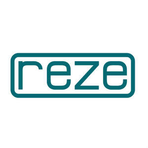

Trade Mark Journal No.2025/033 15 August 2025
UK00004244705 5 August 2025 (6,7,19,37)

- Class 6
- Ores of non-precious metal; common metals and their alloys and semi-finished products made of these materials: irons for construction; mats and stirrups of common metals for buildings; common metals in the form of plate, billet, stick, profile, sheet and sheeting; goods and materials of common metal used for storage, wrapping, packaging and sheltering purposes, containers of metal (storage, transport), buildings of metal, frames of metal for building, poles of metal for building, metal boxes, packaging containers of metal, fences made of metal, guard barriers of metal, metal tubes, storage containers of metal, metal containers for the transportation of goods, ladders of metal; goods of common metal for filtering and sifting purposes, included in this class; doors, windows, shutters, jalousies and their cases and fittings of metal; non-electric cables and wires of metal; ironmongery; small hardware of metal: screws of metal; nails; bolts of metal; nuts of metal; pegs of metal; flakes of metal; pitons of metal; metal chains; furniture casters of metal; fittings of metal for furniture; industrial metal wheels; door handles of metal; window handles of metal; hinges of metal; metal latches; metal locks; metal keys for locks; metal rings for carrying keys; metal pulleys; ventilation ducts, vents, vent covers, pipes, chimney caps, manhole covers, grilles of metal for ventilation, heating, sewage, telephone, underground electricity and air conditioning installations; metal panels or boards (non-luminous and non-mechanical) used for signalling, route showing, publicity purposes, signboards of metal, advertisement columns of metal, signaling panels of metal, non-luminous and non-mechanical traffic signs of metal; pipes of metal for transportation of liquids and gas, drilling pipes of metal and their metal fittings, valves of metal, couplings of metal for pipes, elbows of metal for pipes, clips of metal for pipes, connectors of metal for pipes; safes (strong boxes) of metal; metal railway materials, metal rails, metal railway ties, railway switches; bollards of metal, floating docks of metal, mooring buoys of metal, anchors; metal moulds for casting, other than machine parts; works of art made of common metals or their alloys, trophies of common metal; metal closures, bottle caps of metal; metal poles; metal pillars; scaffolding of metal; metal stakes, metal towers; metal pallets and metal ropes for lifting, loading and transportation purposes; metal hangers, ties, straps, tapes and bands used for load-lifting and load-carrying; wheel chocks made primarily of metal; metal profile laths for vehicles for the purposes of decoration.
- Class 7
- Machines, machine tools and industrial robots for processing and shaping wood, metals, glass, plastics and minerals, 3D printers; construction machines and robotic mechanisms (machines) for use in construction: bulldozers, diggers (machines), excavators, road construction and road paving machines, drilling machines, rock drilling machines, road sweeping machines; lifting, loading and transmission machines and robotic mechanisms (machines) for lifting, loading and transmission purposes: elevators, escalators and cranes; machines and robotic mechanisms (machines) for use in agriculture and animal breeding, machines and robotic mechanisms (machines) for processing cereals, fruits, vegetables and food; machines for preparing and processing beverages; engines and motors, other than for land vehicles, parts and fittings therefor: hydraulic and pneumatic controls for engines and motors, brake linings, brake pads, brake segments, brake shoes other than for vehicles, crankshafts, gearboxes, other than for land vehicles, cylinders for engines, pistons for engines, turbines, not for land vehicles, filters for engines and motors,oil, air and fuel filters for land vehicle engines, exhausts for land vehicle engines, exhaust manifolds for land vehicle engines, engine cylinders for land vehicles, engine cylinder heads for land vehicles, pistons for land vehicle engines, carburetors for land vehicles, fuel conversion apparatus for land vehicle engines, injectors for land vehicle engines, fuel economisers for land vehicle engines, pumps for land vehicle engines, clack valves [parts of machines], pressure valves [parts of machines], starters for motors and engines, dynamos for land vehicle engines, sparking plugs for land vehicle engines; bearings (parts of machines), roller or ball bearings; machines for mounting and detaching tires; alternators, current generators, electric generators, current generators operated with solar energy; painting machines, automatic spray guns for paint, electric, hydraulic and pneumatic punching machines and guns, electric adhesive tape dispensers [machines], electric guns for compressed gas or liquid spraying machines, electric hand drills, electric hand saws, electric jigsaw machines, spiral binding machines for industrial purposes, compressed air machines, compressors (machines), vehicle washing installations, industrial robots with the abovementioned functions; electric and gas-operated welding apparatus, electric arc welding apparatus, electric soldering apparatus, electric arc cutting apparatus, electrodes for welding machines, industrial robots (machines) with the abovementioned functions; printing machines; packaging machines, filling, plugging and sealing machines, labellers (machines), sorting machines for industry, industrial robots (machines) with the abovementioned functions, electric packing machines for plugging and sealing of plastics; machines for textile processing, sewing machines, industrial robots (machines) with the abovementioned functions, needles for sewing machines; pumps other than parts of machines or engines, fuel dispensing pumps for service stations, self-regulating fuel pumps; electric kitchen machines for chopping, grinding, crushing, mixing and mincing foodstuff, washing machines, laundry washing machines, dishwashers, spin driers (not heated), electric cleaning machines for cleaning floors, carpets or floorings, vacuum cleaners and parts thereof; automatic vending machines; galvanizing and electroplating machines; electric door openers and closers; joints [parts of engines], joints [parts of machines].
- Class 19
- Sand, gravel, crushed stone, asphalt, bitumen, cement, gypsum, plaster, concrete, marble blocks for construction, included in this class; building materials (as finished products) made of concrete, gypsum, clay, potters’ clay, stone, marble, wood, plastics and synthetic materials for building, construction, road construction purposes, included in this class: non-metallic buildings, mobile homes [transportable buildings], not of metal; non-metallic building materials, poles, not of metal for power lines, barriers not of metal; natural and synthetic coverings in the form of panels and sheets, being building materials; bitumen cardboard for roofing; bitumen covering for roofing; doors and windows of wood and synthetic materials; artificial stone floor tiles, natural stone floor tiles , ceramic tiles for tile floors and coverings; floors, floorings and floor tiles, not of metal; traffic signs not of metal, non-luminous and non-mechanical, for roads; monuments and statuettes of stone, concrete and marble; building glass; swimming pools [structures], not of metal; aquarium sand.
- Class 37
- Construction services, rental of construction machines and equipment; cleaning services for buildings (interior and exterior), public areas, industrial premises; disinfecting, vermin exterminating, other than for agriculture, aquaculture, horticulture and forestry; rental of cleaning machines and equipment; vehicles service stations for land vehicles, maintenance, repair and refueling of land vehicles; electric vehicle charging services; rental of portable power chargers for electric vehicles; vehicles service stations for marine vehicles, maintenance, repair and refueling of marine vehicles; repair and maintenance of air vehicles; upholstering, repair and restoration of furniture; installation, maintenance and repair of heating, cooling and sanitary installations; cleaning, maintenance and repair of clothing; installation, maintenance and repair of industrial machines and equipment, office machines and equipment, communication apparatus, electric and electronic appliances; passenger lift installation and repair; clock and watch repair; mining extraction; repair of shoes, bags and belts.
YAŞAR BALTACI
Representative: DESTEK PATENT LTD